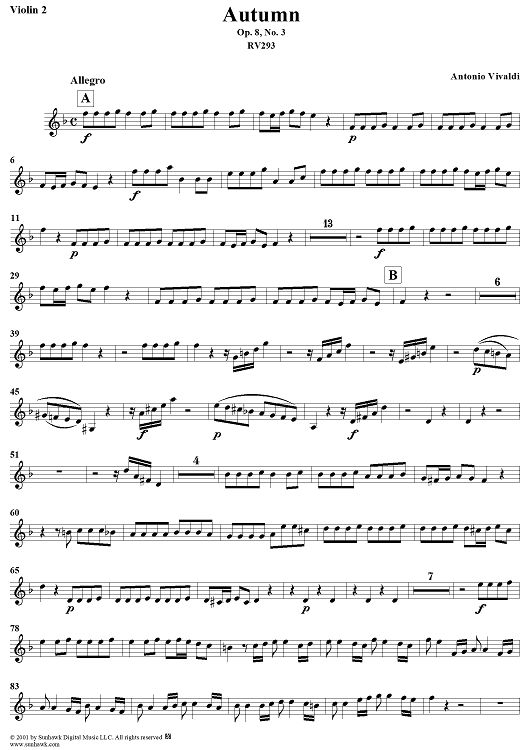
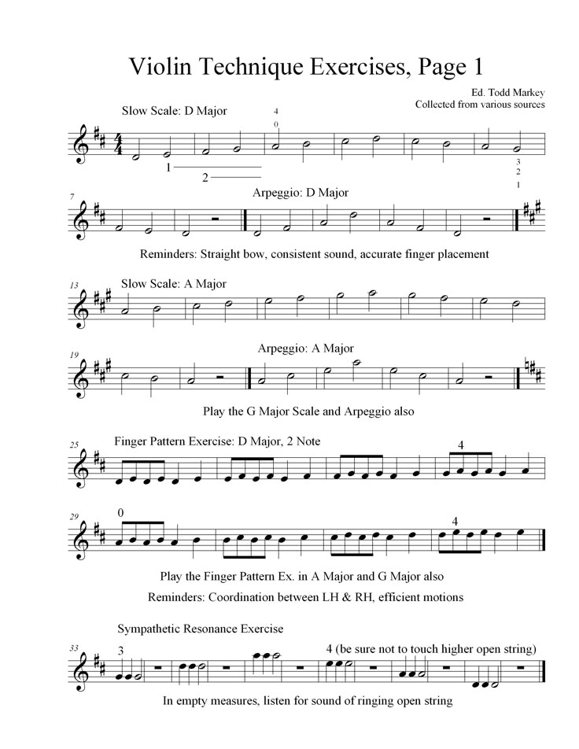
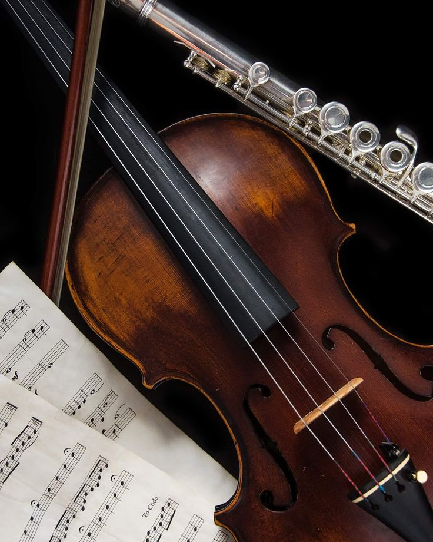
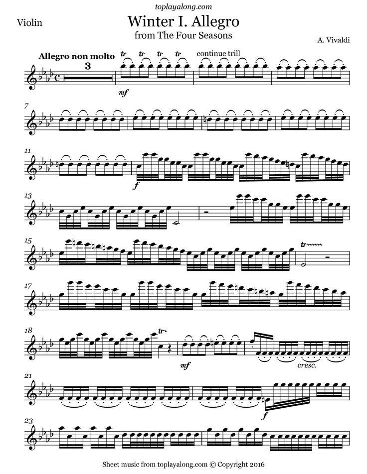
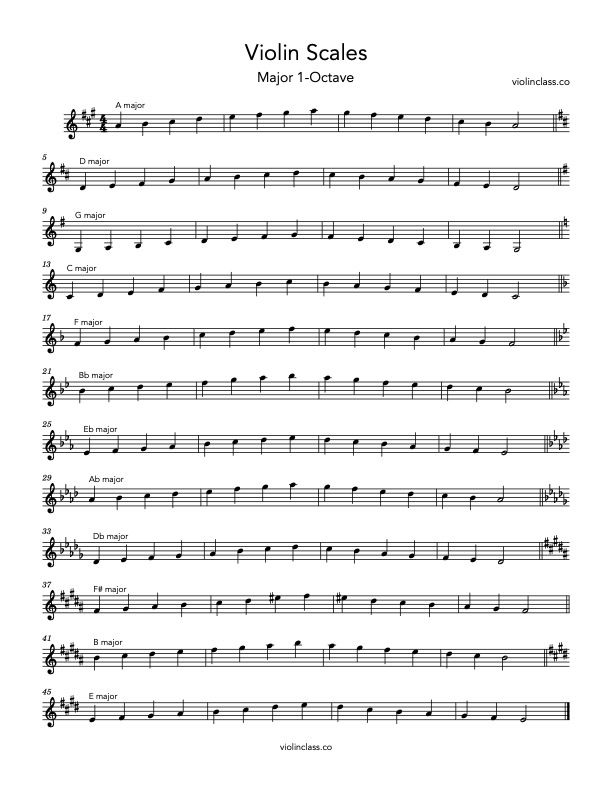

i picked up a violin because i wanted to play howl's moving castle and somehow i ended up committing to demon slayer instead.
this is a thing about me i haven't fully articulated yet. i don't do things halfway. if i'm going to learn an instrument, i'm going to learn it properly. which means my living space now contains a violin and a lot of very patient neighbors who are watching me fail in extremely audible ways.
the howl soundtrack was the gateway. that movie got me in a way most movies don't. and the music did most of the heavy lifting. there's something about that piano theme that made me sit down and think: i want to understand how to make something feel like that. i started lessons. basic stuff. scales. proper posture. the kind of foundational work that no one wants to do but everyone has to do if they're serious about it.





and then demon slayer happened. the soundtrack hit in a completely different way. howl is soft. melancholic. introspective. demon slayer is raw. urgent. there's this desperation in it that makes sense when you're watching people fight for their lives against impossible odds. i wanted to play that. specifically. immediately. so now my practice sessions are split between learning howl's theme and pouring frustration into the demon slayer instrumentals. which are objectively harder. which is the problem i have created for myself.
my teacher watches me work on demon slayer and i can see her calculating. trying to figure out how to tell me gently that maybe i should master the basics before attempting pieces designed to make professional violinists cry. i know she's right. but there's something about having a goal that's impossibly hard that makes the daily work feel less pointless.
there's a metaphor in here about wanting things before i'm ready for them. about reaching for beautiful things even when my hands aren't formed right to hold them yet. about trusting that the reaching itself is how the hands get formed. but i'm still in the phase where i mostly just sound like i'm torturing the instrument. we'll see where it lands.
← Back to Blog